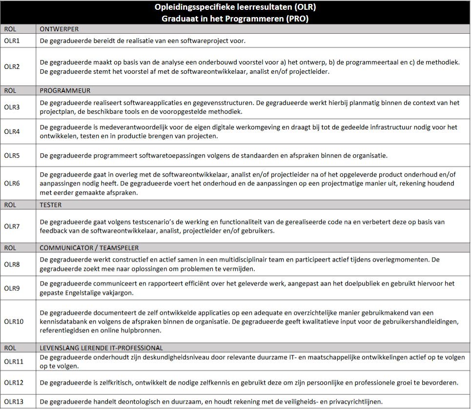

Ontwikkeling
Keuze opleiding
Waarom kies je voor de opleiding programmeren?
Ik vond wiskunde en out of the box denken altijd leuk vroeger, ik had vaak ook wel eens mee gedaan aan wiskunde quizzen als de Vlaamse Wiskunde Olympiade. Probleem oplossend denken is iets wat ik daardoor ontwikkeld heb en dit is natuurlijk ook belangrijk voor programmeren. Ik heb voor het eerst programmeren ontdekt toen ik Industrieel ingenieur studeerden ik heb deze opleiding niet afgemaakt, maar hier heb ik wel een passie ontwikkelt voor programmeren. Daarom heb ik daarna voor deze opleiding gekozen.
Waarom denk je dat dit beroep bij jou past?
Zet zoals ik in de vorige vraag al vermelde heb ik een goed probleem oplossend vermogen en vind ik dit ook fijn om te doen dit is een goede eigenschap voor een programmeur. De uitdaging om nieuwe dingen te blijven leren ook als je al jaren aan het werkt bent is ook wel iets waar ik geïnteresseerd in ben. Het is ook altijd fascineerden om het proces van de start van een project naar een werkende app of website ontwikkelt.
Competenties programmeur

Situering binnen profiel
Ontwerper
Waar sta je momenteel?
Het ontwerpen lukt meestal we maar soms duurt het wel lang om unieke voorstellen te maken.
Wat lukt je al goed?
Het analyseren wat mogelijk en niet mogelijk is om te doen in met mijn kennis in de programmeertaal.
Wat lukt je nog niet?
Het verzinnen van unieke ontwerpen is soms wel moeilijk.
Voorbeelden:
- Voor het C# Mastermind project heb ik een uniek ontwerp moetten maken.
- Voor het web poject/portfolio heb ik een uniek ontwerp moetten maken.
- Een analyse uitgevoerd voor het C# project om te zien of alles haalbaar was.
Programmeur
Waar sta je momenteel?
Het programmeren en houden aan de richtlijnen gaat meestal wel goed.
Wat lukt je al goed?
De vereiste functionaliteiten om te zetten naar een werkend programma.
Wat lukt je nog niet?
Soms begint de code op spaghetti code te lijken en moet ik alles weer gaan schoonmaken.
Voorbeelden:
- Voor het C# project heb ik planmatig elke sprint afgerond.
- Het houden aan de coding conventions voor else programmeertaal.
- Het C# project af te ronden met alle werkende functionaliteiten.
Tester
Waar sta je momenteel?
Het testen/debuggen lukt meestal wel goed.
Wat lukt je al goed?
Het opsporen van bugs in een programma en uit te vinden waar het probleem ligt.
Wat lukt je nog niet?
Soms is het wel moeilijk om te beslissen wat de beste manier is om een functionaliteit te testen.
Voorbeelden:
- Bugs vinden en oplossen in het C# project.
- Debuggen om te zien waarom iets fout gaat.
- Na elke sprint in het C# project alle functionaliteiten te testen en zeker zijn dat deze werken als gevraagd.
Communicator / teamspeler
Waar sta je momenteel?
Samen werken met anderen gaat wel goed.
Wat lukt je al goed?
Het gevraagde werk netjes op te leveren.
Wat lukt je nog niet?
Het documenteren vergeet ik soms als ik te druk bezig ben met het programmeren.
Voorbeelden:
- Samen goede richtlijnen samenstellen voor het toekomstige WPL2 project.
- Mijn eigen deeltaken succesvol en tijdig te voltooien voor het toekomstige WPL2 project.
- Andere teamleden helpen wanneer dit nodig is tijdens het toekomstige WPL2 project.
Levenslang lerende IT-professional
Waar sta je momenteel?
Als ik vaak iets niet weet kijk probeer ik vaak op te zoeken hoe ik dat kan oplossen.
Wat lukt je al goed?
Het raadplegen van de programmeertaal documentaties of het internet.
Wat lukt je nog niet?
Rekening houden met privacy- en veiligheidsrichtlijnen is som wel moeilijk.
Voorbeelden:
- De .Net documentaties raadplegen tijdens the C# project.
- Nieuwe dingen bijleren van het internet.
- In mijn vrije tijd mezelf ook bezig houden met projecten in Unity.